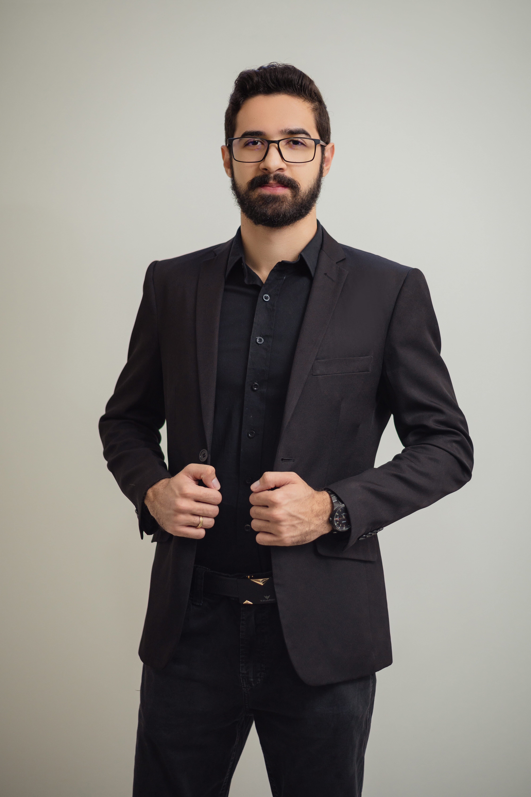

A NORTE é mentoria individual — não é curso e não é turma — para quem estuda Direito, mira a OAB ou um concurso e precisa organizar o tempo real de estudo que tem.
As horas passam nos livros e no fim do dia não há como saber se o tempo foi bem investido ou apenas gasto.
O conteúdo é grande demais para caber em qualquer cronograma copiado da internet.
Trabalho, faculdade e estudo disputam o mesmo dia — e alguma coisa sempre fica para depois.
Somos a ponte entre onde você está e onde quer chegar.
Passo a passo, mapeamos necessidades, dificuldades e também as facilidades que você já tem.
Um plano de estudos personalizado, montado para o seu caso. Você só executa.
O que estudar e quanto tempo dedicar, dentro da sua realidade — mesmo trabalhando.
Acompanhamento diário e encontros ao vivo a cada quinze dias para ajustar o caminho.

Samuel trabalha desde os 14 anos. Foi aprovado na OAB aos 20, ainda no 8º semestre da faculdade — estudando nas horas que sobravam do trabalho.
Hoje é advogado, professor universitário, Procurador e aprovado para Juiz Leigo do TJ/BA. E continua conciliando três empregos com os próprios estudos.
Não foi talento. Foi método. E método se ensina.
Do 1º ao 10º semestre: construir base sólida em vez de estudar só para a próxima prova.
Foco no que a prova cobra de fato, com revisão e questões organizadas por prioridade.
Ciclo de estudos, caderno de erros e constância — a disciplina que decide o resultado.
Quem tem duas ou três horas por dia e precisa que elas rendam o máximo possível.
E-book 1 — Estudo efetivo
E-book 2 — Revisão e memorização
E-book 3 — Jurisprudência
E-book 4 — Questões e caderno de erros
E-book 5 — Tecnologia e aplicativos aliados aos estudos
Palestra ao vivo — Gestão de Tempo
Cada mentoria é conduzida individualmente pelo Samuel, com contato diário. Isso impõe um limite ao número de alunos por turma — e é esse limite que mantém o acompanhamento real.
Advogado
Professor universitário
Procurador
Aprovado para Juiz Leigo do TJ/BA
Aprovado na OAB aos 20 anos, no 8º semestre
É uma conversa guiada sobre sua rotina, seu momento de estudo, suas dificuldades e o que já funciona para você. A partir dela o Samuel monta o plano individual — antes disso, nada é prescrito.
O acompanhamento é contínuo, com contato diário e encontros ao vivo a cada quinze dias. A duração é definida no diagnóstico, de acordo com o seu objetivo e a data da sua prova.
Online, de qualquer lugar. O contato diário acontece por mensagem e os encontros quinzenais por vídeo.
Não. Ninguém pode garantir aprovação, e quem garante não está sendo honesto com você. O que existe aqui é método, plano individual e acompanhamento de perto. A execução continua sendo sua.
Sim — é justamente o ponto de partida. O plano é montado sobre o tempo que você realmente tem, não sobre um dia ideal que não existe.
Vagas abertas para esta turma.
Comece pelo diagnóstico. É uma conversa, sem compromisso e sem cadastro.
Fale comigo e vamos montar o seu diagnóstico